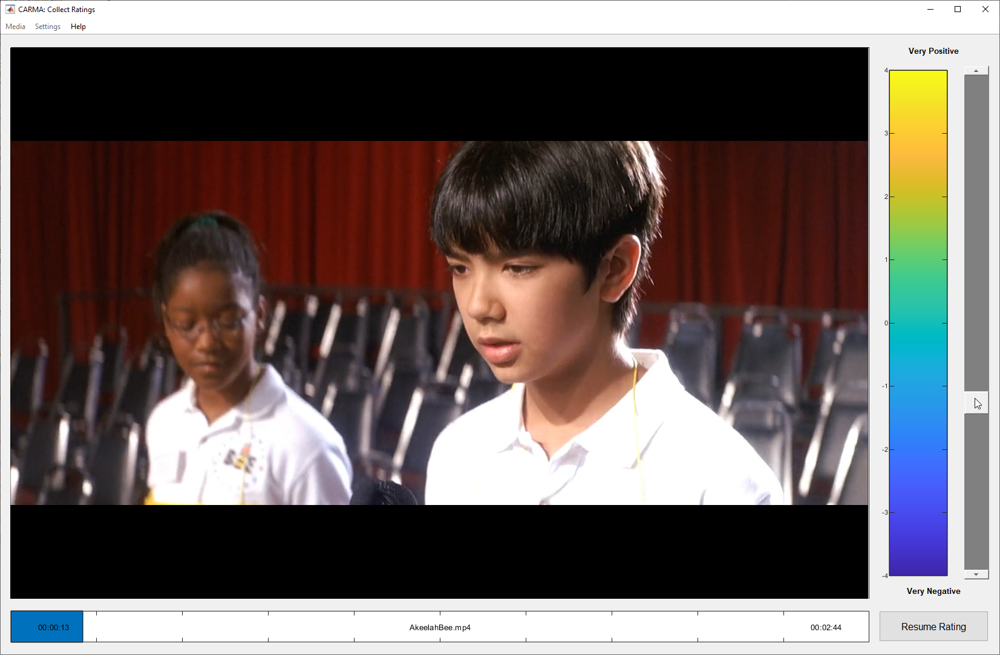

Warning: Removed 239 rows containing missing values (`geom_line()`).
Dynamic Affective Movie Clip
Database for Subjectivity Analysis
ACII 2023 | Girard, Tie, & Liebenthal
https://dynamos.mgb.org
Emotion ratings will inevitably vary between raters…
We usually treat such variability as a nuisance to “fix”
But we can gain a lot by embracing these differences: studying their sources and building them into our models
Ambiguity: variability across different observers’ perceptions of the emotion in a given stimulus (see Sethu et al., 2019)
Subjectivity: variability across different subjects’ self-reports of the emotion they experienced from a given stimulus
–4 (negative) to +4 (positive)
Rated at 30 Hz, binned to 1 Hz 
Each rated 0 (very slightly or not at all) to 4 (extremely):
Positive Affect
alert, determined, enthusiastic, excited, inspired
Negative Affect
afraid, distressed, nervous, upset, scared

Warning: Removed 239 rows containing missing values (`geom_line()`).

Emotion elicitation video set with normative data
Affective content analysis with average ratings
Subjectivity analysis to predict rating distributions
Subjectivity analysis to explain degree of subjectivity
Personalized modeling of affective reactions
Add more movie clips and participants
Add more dynamic and holistic rating dimensions
Add data from sensors (e.g., physiological and eye tracking)
Collect information about participants’ personality
Collect similar data in clinical/medical populations